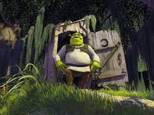
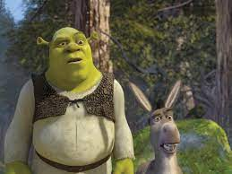

Жил-был в лесу Шрек. Он был очень большой, зеленый и страшный. Но на самом деле он был очень добрым и заботливым. Он любил своих друзей - Осла, Кота и Дракона, и всегда помогал им в трудную минуту.
Однажды Шрек решил отправиться в путешествие по миру, чтобы найти новых друзей и узнать больше о мире. Он прошел через множество приключений и встретил множество разных существ.
Но однажды Шрек попал в ловушку, и его друзья не могли его спасти. Он оказался в темном подземелье, где его ждали страшные монстры. Но тут появился маленький гном, который помог Шреку выбраться из ловушки.
Шрек был очень благодарен гному и решил помочь ему в ответ. Они отправились в опасное путешествие, чтобы спасти принцессу, которую похитили злые волшебники.
В конце концов, Шрек и его друзья победили злых волшебников и спасли принцессу. Но самое главное, они стали настоящими друзьями и никогда не забудут друг друга.
Вот картинки Шрека:


Раньше Шрек был добрым, но сейчас он стал очень злым.Горе тому кто увидет его.Он ходит ночью по деревням, и заглядывает людям в окна.И тот кто посмотрит на него тот привращается в камень.